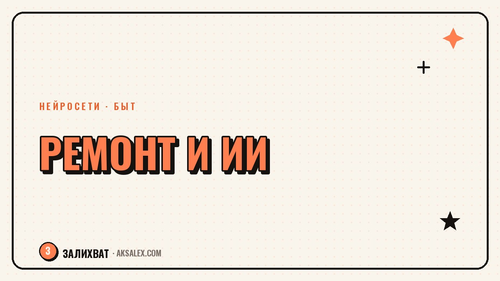

Нейросети для ремонта: от идеи интерьера до сметы

Ремонт обычно начинается с вопроса, на который сложно ответить без дизайнера: как будет выглядеть комната после переклейки обоев, поместится ли диван у окна и сколько примерно это будет стоить. Нейросети не заменяют прораба и архитектора, но закрывают именно этот первый, самый неопределённый этап - дают визуальный набросок, помогают расставить мебель на плане и прикинуть порядок цифр в смете, пока ещё ничего не куплено.
Что нейросети умеют в ремонте, а что нет
Нейросети для изображений хорошо справляются с визуализацией стиля: можно загрузить фото комнаты и получить вариант с другими обоями, полом или мебелью. Это удобно, чтобы сразу отсеять варианты, которые не нравятся визуально, не дожидаясь реального ремонта.
Хуже обстоит дело с точными размерами и инженерными расчётами - розетки, несущие стены, вентиляция. Здесь нейросеть может подсказать общее направление, но финальное решение всегда должно проверяться специалистом, особенно если речь о перепланировке.
Нейросеть хороша там, где нужно быстро увидеть результат. Там, где нужна точность до сантиметра и допуск по нормам - нужен человек с рулеткой и образованием.
Как сгенерировать визуализацию комнаты
Для визуализации обычно загружают фото пустой или текущей комнаты и описывают желаемый стиль: скандинавский, лофт, светлые тона, конкретные материалы. Чем точнее описание, тем ближе результат к тому, что реально можно повторить.
Что указать в запросе
- Стиль интерьера и примеры, на которые хочется ориентироваться
- Цветовую гамму стен, пола, мебели
- Что оставить без изменений - например, встроенный шкаф или потолок
- Освещение: тёплый или холодный свет, естественный свет из окна
Полученный результат стоит воспринимать как настроение и общее направление, а не точный чертёж - мебель на картинке может не совпадать по размерам с реальной.
Сервисы для планировки и дизайна: сравнение
Задачи в ремонте разные - где-то нужна картинка для вдохновения, а где-то план расстановки мебели с размерами. Вот как распределяются подходящие инструменты.
| Задача | Подходящий инструмент | Что получаешь на выходе |
|---|---|---|
| Визуализация стиля комнаты | Генераторы изображений (Midjourney, Шедеврум, Kandinsky) | Картинка интерьера по текстовому описанию или фото |
| Расстановка мебели с размерами | Планировщики интерьера (Planner 5D и похожие) | План комнаты сверху с реальными габаритами |
| Подбор цветовой палитры | Чат-нейросети (ChatGPT, YandexGPT) | Список сочетаний цветов и материалов под стиль |
| Прикидка сметы | Чат-нейросети с уточнением региона и материалов | Примерный порядок сумм по статьям расходов |
От фото комнаты до сметы: разбор по шагам
Шаг 1. Сфотографируй комнату при дневном свете
Снимок без лишних теней и с как можно большим охватом комнаты даст нейросети больше информации для визуализации и позволит точнее показать пропорции.
Шаг 2. Опиши задачу и ограничения
Укажи бюджет, что менять нельзя (например, старую плитку в санузле, если на новую пока нет денег), и какой результат важен в первую очередь - внешний вид или функциональность.
Шаг 3. Попроси черновую смету по статьям
Раздели запрос на категории: материалы, работа мастеров, мебель, декор. Так легче сравнить черновую смету нейросети с реальными ценами в магазинах твоего города и понять, где прогноз разошёлся с реальностью.
Частые ошибки при использовании нейросетей в ремонте
Главная ошибка - воспринимать сгенерированную смету как точную цифру для бюджета. Нейросеть ориентируется на усреднённые данные и не знает текущих цен в конкретном магазине или у конкретной бригады, поэтому отклонение в полтора-два раза - обычное дело.
- Доверять расчётам несущих конструкций и перепланировки без инженера
- Закупать материалы по цветам с визуализации без проверки вживую
- Не учитывать доставку и монтаж при прикидке бюджета
Как использовать нейросеть для сметы и закупки материалов
Удобный приём - составить с нейросетью список материалов по комнатам и попросить расставить приоритеты: что критично для ремонта, а что можно докупить позже. Это помогает не тратить весь бюджет на первой неделе закупок.
Перед покупкой стоит свериться с реальными ценами хотя бы в двух магазинах - нейросеть даёт ориентир по порядку цифр, а окончательное решение всегда остаётся за тем, кто видит чек.
Частые вопросы
Можно ли по визуализации нейросети заказывать ремонт у бригады?
Визуализацию стоит использовать как пример настроения и стиля, а не технический чертёж. Бригаде нужны точные размеры и материалы, которые проверяются отдельно.
Какая нейросеть лучше всего рисует интерьеры по фото?
Хорошо справляются Midjourney и российский Шедеврум - оба умеют менять стиль комнаты по фото и текстовому описанию. Результат стоит сравнить в паре сервисов, так как итог зависит от конкретного снимка.
Насколько точна смета, которую считает нейросеть?
Это прикидка по порядку цифр, а не точный расчёт. Она полезна на старте, чтобы понять общий масштаб бюджета, но перед покупками нужно свериться с реальными ценами в магазинах.
Поможет ли нейросеть с перепланировкой квартиры?
Она может предложить идею расстановки комнат, но вопросы несущих стен, вентиляции и согласования перепланировки всегда нужно решать с инженером и через официальные инстанции.
С чего начать, если ремонт только планируется?
Начни с фото комнаты и описания желаемого стиля в любой нейросети для изображений, затем переходи к планировщику с реальными размерами мебели и только потом - к черновой смете по статьям расходов.
Раз тема оказалась полезной, вот что почитать следующим. Промпты и шаги: как нейросеть помогает продумать неприятный разговор заранее и не растеряться в моменте.
Читать статью →а не вручную